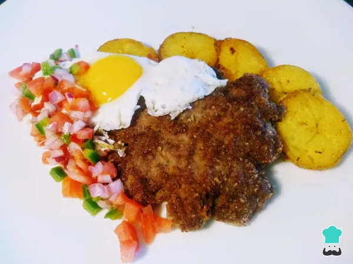

Es un Estado Unitario, Social de Derecho Plurinacional Comunitario, libre, independiente, soberano, democrático, intercultural, descentralizado y con autonomías (Constitución de 2009).
Silpancho
Ingredientes para hacer Silpancho boliviano:
700 gramos de carne molida o filete de ternera
300 gramos de pan rallado
4 papas medianas
2 tomates
1 pimiento rocoto o habanero
1 cebolla morada mediana
1 pimiento verde
200 gramos de arroz (opcional)
4 huevos
1 chorro de aceite para freir
1 chorro de vinagre
1 pizca de sal
1 pizca de pimienta
1 pizca de comino
Hierve las papas lavadas en una olla con abundante agua y un puñado de sal. No es necesario retirar la piel.
Pica finamente los pimientos, la cebolla y los tomates frescos, que formarán parte de la ensalada que acompañará el silpancho cochabambino.
Condimenta la carne molida con sal, pimienta y comino al gusto. Mezcla bien y reserva. Recuerda que aunque nosotros estemos haciendo silpancho con carne molida, también se puede hacer con filete.
Haz un bola con la carne molida y colócala sobre el pan rallado, que estará en un plato plano.
Con la ayuda de una lámina de papel film puesta encima, aplana la carne dándole pequeños golpes para que el pan rallado se vaya adhiriendo a ella.
Dale la vuelta la carne y repite el paso anterior. Tiene que quedar como si de un filete se tratara, de medio centímetro de grosor aproximadamente y con las dos caras rebozadas (empanizadas).
Aparte, mezcla los vegetales cortados y agrega vinagre, aceite y sal al gusto para condimentarlos y potenciar su sabor.
Por otro lado, en una sartén con aceite caliente, fríe el silpancho por uno de los lados.
Cuando esté dorado del primer lado, dale la vuelta y cocínalo por el otro lado.
Escurre las papas ya cocinadas, córtalas en rodajas de medio cm de grosor y fríelas en otra sartén con aceite caliente.
Truco: Puedes usar la misma sartén que has utilizado para hacer el silpancho cochabambino, así las papas absorberán los sabores de la cocción de la carne.
Retira las papas cuando estén listas y en la misma sartén fríe un huevo. Como la sartén estará ya muy caliente, no tienes que añadir más aceite si no quieres, ya que el huevo se cocinará igualmente
con la cantidad que queda.
Solo queda emplatar el silpancho. Para ello, coloca las papas y la ensalada de verduras en la base, encima sitúa la carne y sobre ella el huevo. De forma opcional, puedes añadir a la receta arroz blanco
hervido en agua, aunque hemos de decir que este ingrediente no constaba en la receta original de silpancho boliviano. Esta es una de esas elaboraciones fáciles de hacer, completas e ideales para cuando
nos apetece un plato contundente y lleno de sabor. De postre, ¿qué te parece una torta de yuca?
Silpancho cochabambino - Historia
El singular nombre de "silpancho" viene de "silpa", que en quechua quiere decir "alargado", y "Don Pancho", que fue el primero que realizó dicha preparación. Como sucede en muchísimas elaboraciones
tradicionales de todo el mundo, el silpancho boliviano nació como una forma de comer platos contundentes en medio de una crisis económica. Sin embargo, su acogida fue tal, que ahora se pueden ver lugares
por todo el país donde exclusivamente se dedican a este plato.
Ahora que sabes cómo hacer silpancho de carne molida y la historia del silpancho, anímate a elaborarlo y no olvides dejar tu comentario. Otras recetas bolivianas son:

Pique a lo macho
Ingredientes
2 Lomos de ternera
5 Salchichas tipo viena
½ Cebolla morada
1 Chile manzano verde
1 Huevo
2 Papas
1 Tomate
1 taza de Cerveza
1 cuchara de Salsa de soja
Pimienta negra
Aceite de oliva
En primer lugar, se debe cocinar el huevo hasta que esté duro y reservarlo.
Luego, pelar las papas y cortarlas en bastones para freírlas en una sartén con aceite de oliva.
A continuación, se deben cortar las salchichas en trozos medianos, al igual que los lomos de ternera y las cebollas.
En un wok o sartén, se colocan las cebollas cortadas, las tiras de ternera y 3 cucharadas de aceite de oliva a fuego fuerte.
Es importante mover la preparación constantemente para una cocción pareja.
Se baja el fuego del wok y se tapa para que la ternera y las cebollas se cocinen en sus propios jugos a fuego bajo durante 3 o 4 minutos.
Luego, se agrega pimienta negra al gusto, la salsa de soja y el vaso de cerveza.
Se deja cocinar durante 5 minutos destapado y se añaden los trozos de salchichas, cocinando por otros 5 minutos, moviendo ocasionalmente.
Una vez que las papas estén cocinadas, se recomienda colocarlas en un plato cubierto con papel para que absorban el exceso de aceite.
Posteriormente, se disponen las papas fritas en el fondo de un plato, seguidas por la carne con las salchichas, la cebolla y sus jugos, el tomate, el chile manzano verde
cortado en rodajas y finalmente el huevo duro cortado por la mitad.
.svg.png)